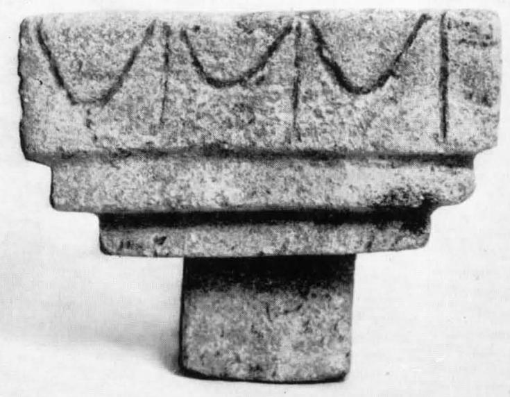

-
KANZa1
Names
KANZa1, KAN Za 1
Support
Stone vessel
Location
Kannia
Findspot
Unavailable

Scribe
Unavailable
Context
Unavailable
Dimensions
Catalogue
Readings
1 1 0 A none
1 1 1 *900 none
1 1 2 I none
𐘇𐄁𐘚
A*900I
𐘇𐄁𐘚
A*900I
KAN Za 1
, stone libation table (HM 2895; Bollettino
d'Arte 44, 1959, 249 fig. 23-24; Raison-Pope 1994, p. 42), from
room XV
a. A-[•]-I
b. [ ]
vestigia
c.
vestigia
KARDAMOUTSA
Commentary © John Younger
References
papers/KANZa1.pdf#page=17